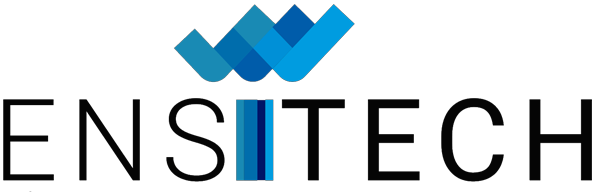

<html></html>
<head>
    <meta charset="utf-8">
    <meta name="viewport" content="width=device-width, initial-scale=1"> 
    <link rel="stylesheet" href="Ecole-Entreprise.css">
    <title>PortFolio</title>
    <link href="https://cdn.jsdelivr.net/npm/bootstrap@5.3.3/dist/css/bootstrap.min.css" rel="stylesheet" integrity="sha384-QWTKZyjpPEjISv5WaRU9OFeRpok6YctnYmDr5pNlyT2bRjXh0JMhjY6hW+ALEwIH" crossorigin="anonymous">
</head>
<body class="body">
    <header class="header">
        <nav class="navbar navbar-expand-lg bg-body-tertiary">
            <div class="container-fluid">
              <button class="navbar-toggler" type="button" data-bs-toggle="collapse" data-bs-target="#navbarScroll" aria-controls="navbarScroll" aria-expanded="false" aria-label="Toggle navigation">
                <span class="navbar-toggler-icon"></span>
              </button>
              <div class="collapse navbar-collapse" id="navbarScroll">
                <ul class="navbar-nav me-auto my-2 my-lg-0 navbar-nav-scroll" style="--bs-scroll-height: 100px;">
                  <li class="nav-item">
                    <a class="nav-link" href="index.html">A Propos</a>
                  </li>
                  <li class="nav-item">
                    <a class="nav-link" href="BTS_SIO.html">BTS SIO</a>
                  </li>
                  <li class="nav-item">
                    <a class="nav-link active" aria-current="page" href="Ecole-Entreprise.html">Ecole/Entreprise</a>
                  </li>
                  <li class="nav-item">
                    <a class="nav-link" href="Realisations-Missions.html">Realisations</a>
                  </li>
                  <li class="nav-item">
                    <a class="nav-link" href="Projets.html">Projets</a>
                  </li>
                  <li class="nav-item">
                    <a class="nav-link" href="Veille_Technologique.html">Veille technologie</a>
                  </li>
                  <li class="nav-item">
                    <a class="nav-link" href="Contact.html">Contact</a>
                  </li>
                </ul>
              </div>
            </div>
          </nav>
    </header> 

    <div class="Container">
        <h1 class="title">Ecole/Entreprise</h1>
        <div class="contents">
            <div class="Ecole">
                <h1 class="title">Présentation de l'école</h1>
                <h2 class="title2">ENSITECH</h2>
                
                <p class="Textcontent">ENSITECH, créée en 2005, propose des formations en Développement & Innovation ainsi qu’en Sécurité, Systèmes et Réseaux. Ce qui m’a vraiment convaincu de choisir cette école, c’est qu’on peut y faire tout son parcours, du Bac+2 au Bac+5, avec des diplômes et des certifications reconnus. En plus, ENSITECH se spécialise dans l’alternance, et grâce à son large réseau de partenaires, elle est bien réputée, ce qui aide énormément pour trouver un stage ou un emploi.
                    L’une des choses que j’apprécie le plus ici, c’est l’accompagnement personnalisé. Dès que j’ai été admis, j’ai eu droit à des entretiens individuels, des ateliers pour améliorer mon CV, et des sessions de job dating avec des entreprises partenaires. C’est vraiment une école à taille humaine où on se sent soutenu tout au long du parcours.
                </p>
                <button class="btnEnsitech"><a href="https://www.ensitech.eu/" target="_blank">Aller sur le site</a></button>
            </div>
            <div class="Entreprise">
                <h1 class="title">Présentation de l'entreprise</h1>
                <h2 class="title2">IMERYS - (Alternance)</h2>
                
                <p class="Textcontent">Je travaille dans le département IT chez Imerys, où je fais partie de l'équipe de support informatique.
                     En tant que leader mondial des spécialités minérales pour l’industrie, Imerys propose des solutions à haute valeur ajoutée pour des secteurs variés comme la construction, l’agriculture et les biens de consommation.
                      Ce qui me motive ici, c’est non seulement de pouvoir aider au bon fonctionnement des systèmes informatiques, mais aussi de contribuer à une entreprise avec une expertise technique reconnue dans le traitement des ressources minérales, la fabrication de minéraux synthétiques et les formulations.
                       Travailler dans cet environnement, c’est être au cœur d’innovations qui ont un impact dans de nombreuses industries.
                    </p>
                    <button class="btnImerys"><a href="https://imerys.com/" target="_blank">Aller sur le site</a></button>
                <h2 class="title2">COINAUTE - (Stage)</h2>
                <p class="Textcontent"></p>
            
            </div>
        </div>

    </div>
    
    <footer>
        
    </footer>
    <script src="https://cdn.jsdelivr.net/npm/bootstrap@5.3.3/dist/js/bootstrap.bundle.min.js" integrity="sha384-YvpcrYf0tY3lHB60NNkmXc5s9fDVZLESaAA55NDzOxhy9GkcIdslK1eN7N6jIeHz" crossorigin="anonymous"></script>
</body>
</html>